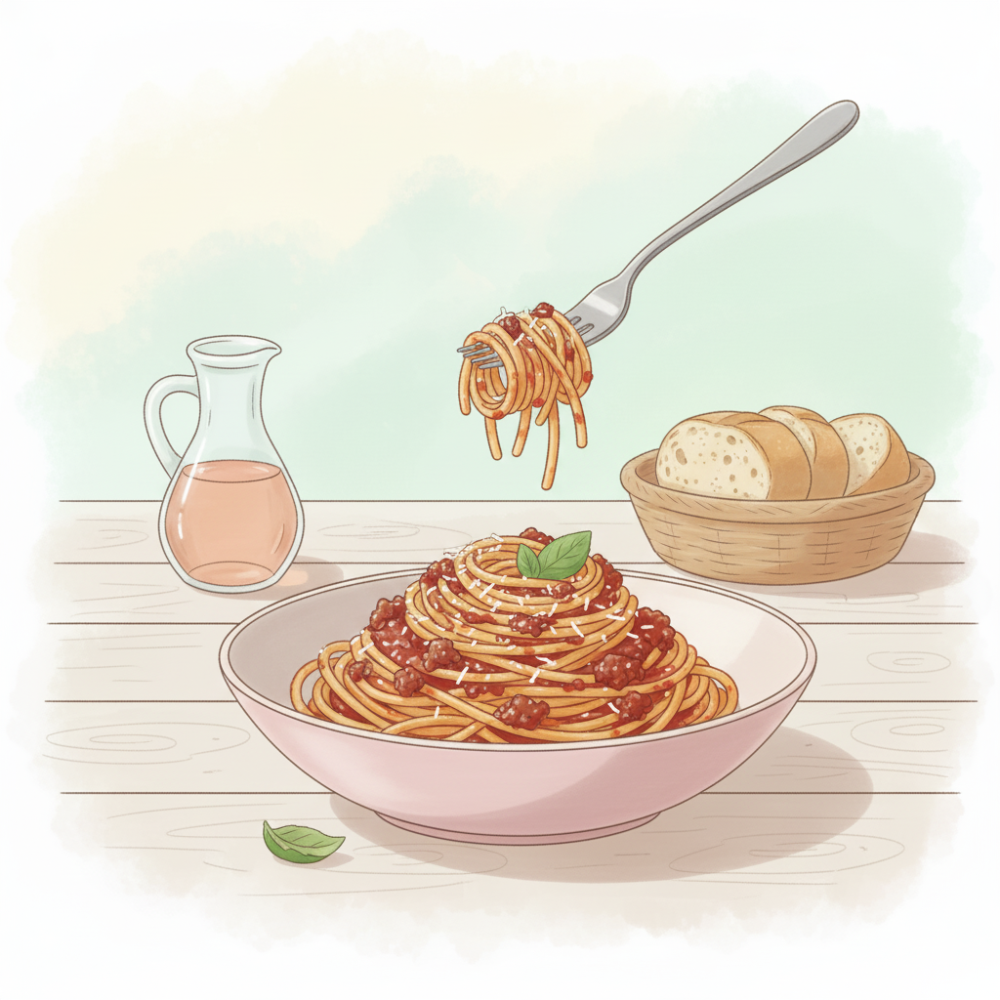

Espaguetis a la boloñesa
Un clásico de la cocina italiana, perfecto para cualquier ocasión.

Ingredientes
- 200 g de espaguetis
- 150 g de carne picada
- 1 cebolla
- 2 tomates maduros
- Aceite de oliva, sal y especias
Preparación
- Cocer la pasta en agua con sal.
- Sofreír la cebolla con la carne picada.
- Añadir los tomates triturados y cocinar 10 min.
- Mezclar la salsa con la pasta y servir caliente.
Consejo
Puedes añadir queso parmesano rallado para darle un toque extra.